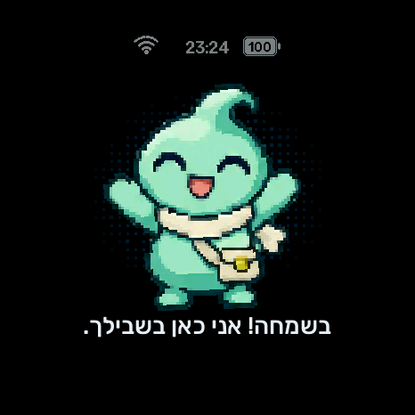

קטן בכיס, גדול באופי.
חבר קטן.
אפשרויות גדולות.
דמות עם אופי, קול שמדבר איתך ועוזר שתמיד קרוב.
הכירו את Wappai — העוזר האישי שבונים בדרך שלכם.
מדבר עבריתiOS + Webקוד פתוח
MEET YOUR LITTLE COMPANIONWappai / 01

לוחצים, מדברים. הוא כבר מקשיב.
Waveshare 1.75C · הדגמה מונפשת עם נתונים לדוגמה
חבר קטן. נוכחות גדולה.
מבט מקרוב על המכשיר, האפליקציה והשיחה.
החליקו בין הדוגמאות · לחצו לצילום המלא